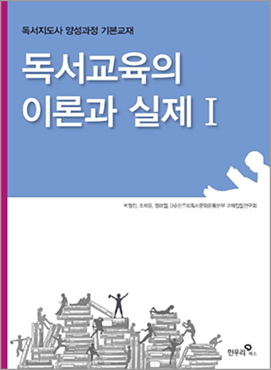
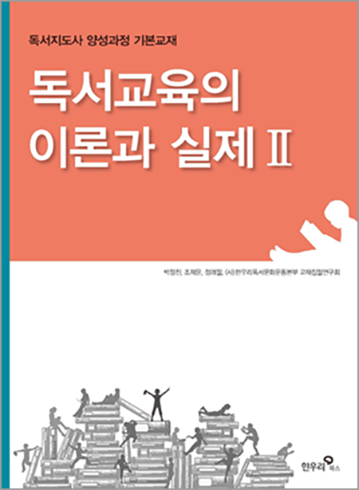
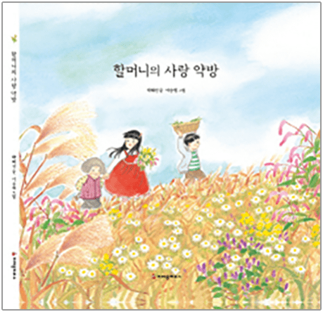
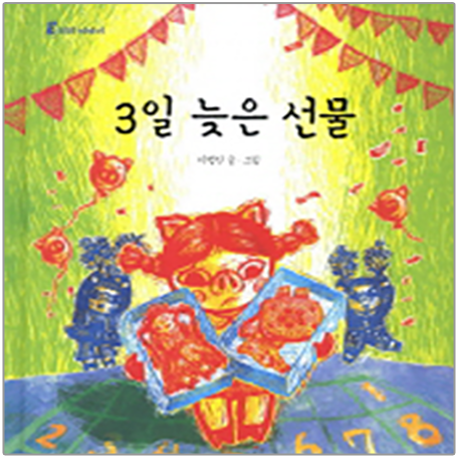
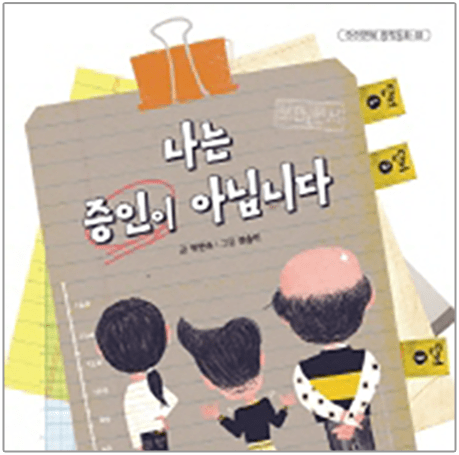
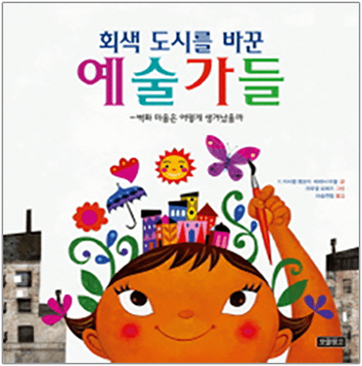

필기시험과목
| 과목 | 내용 | 문항 |
|---|---|---|
|
독서 교육론 |
독서와 독서지도의 이해 아동 발달과 독서 진로 독서 교육의 이해 상담과 독서 교육과 교육학 |
13 |
|
독서 자료론 |
독서 자료 선정 아동문학의 이해 |
10 |
|
독서지도 방법론 |
글쓰기 지도의 실제 서평식 독서감상문 쓰기 논술 지도 과정 중심 독서지도 토의 토론 지도 독서 교육과정과 수업 계획 |
27 |
- 필기 총 50문항, 배점 100점 중 60점 이상 합격
필기시험 지정 도서
-

독서교육의 이론과 실제 Ⅰ
박정진, 조재윤, 정래필, (사)한우리독서문화운동본부 교재집필연구회
스푼북 펴냄 -

독서교육의 이론과 실제 Ⅱ
박정진, 조재윤, 정래필, (사)한우리독서문화운동본부 교재집필연구회
스푼북 펴냄
실기시험과목
| 과목 | 내용 | 문항 |
|---|---|---|
| 독서지도 실무 |
서평식 독서감상문 작성 | 1 |
| 독서지도계획안 작성 | 1 |
- 실기시험 지정 도서는 회차별 원서접수 기간에 공고
- 지정 도서 4권 중 시험 당일에 선정되는 도서로 작성
- 실기 문항별 배점 50점씩, 합산 100점 중 60점 이상 합격
144회 실기시험 지정 도서
-

할머니의 사랑 약방
박혜선 글, 이승원 그림
크레용하우스 펴냄 -

3일 늦은 선물
이형진 글, 이형진 그림
시공주니어 펴냄 -

나는 증인이 아닙니다
박현숙 글, 권송이 그림
아이앤북 펴냄 -

회색 도시를 바꾼 예술가들
F.이사벨 캠포이·테레사 하웰 글, 라파엘 로페즈 그림, 마술연필 옮김
보물창고 펴냄